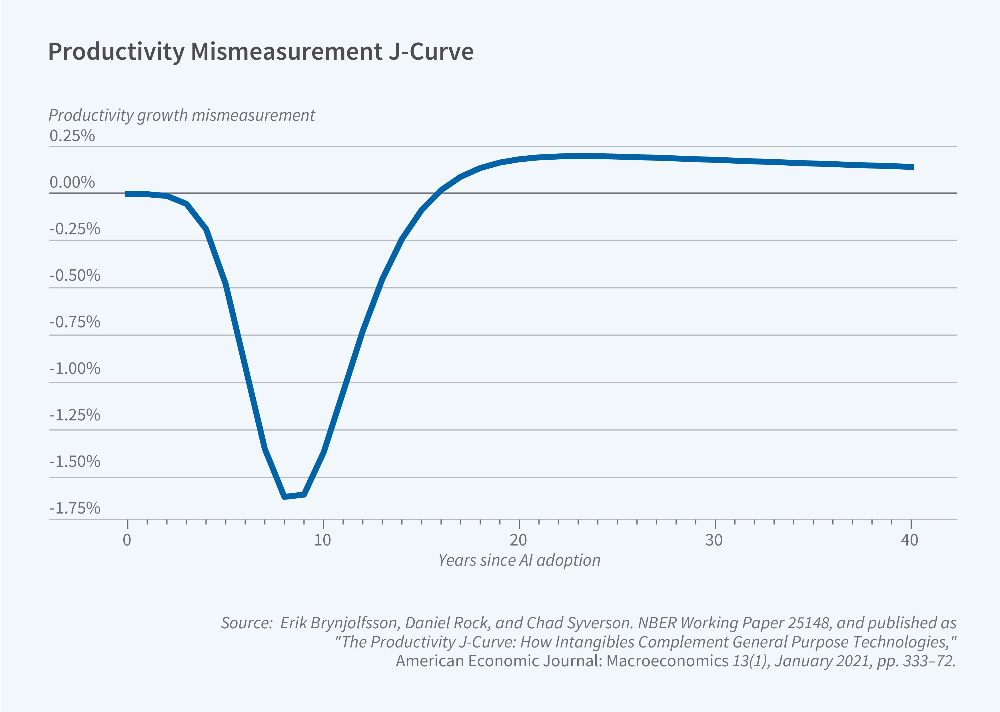
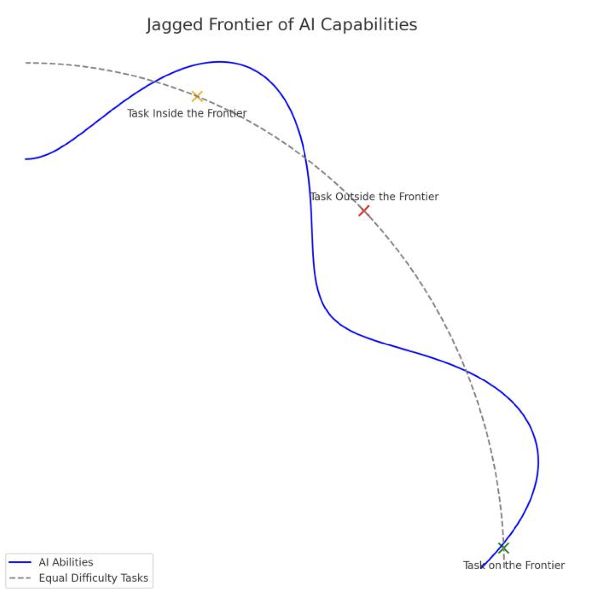
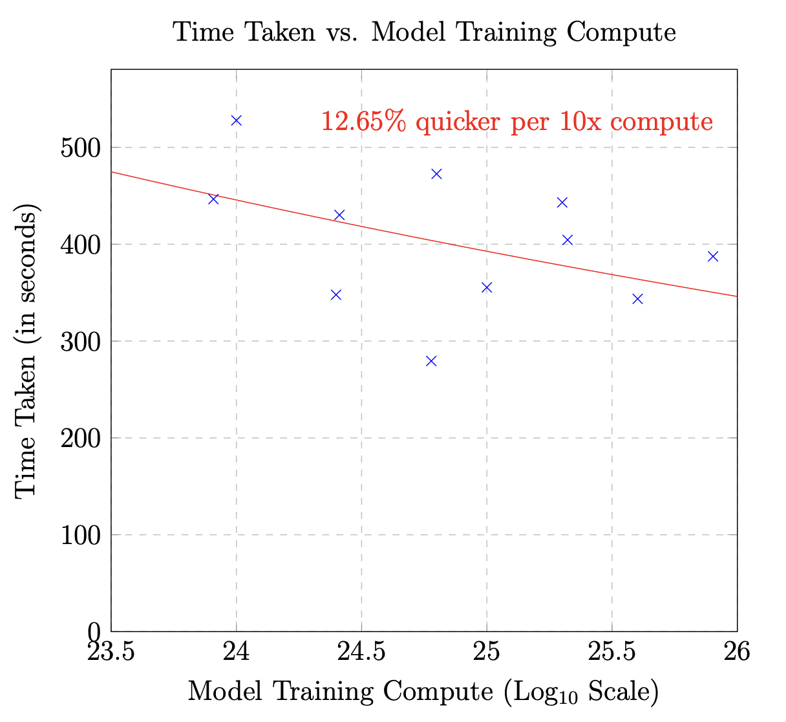

We have a reasonably good understanding of the factors that impact language model capabilities (e.g., dataset and model size), yet our understanding of how this translates to usefulness in practice lags behind. That is, we lack estimates of the marginal value of language model capabilities, where we use marginal value to capture how improvements in capabilities translate into real-world impact. While calculating this quantity requires concerted effort from both researchers and practitioners, it informs us about when further investment in capabilities is worthwhile, how different tasks evolve as models progress, and which tasks benefit the most from human expertise. Importantly, this relationship is also shaped by human and organizational factors beyond model capabilities.

Source: Brynjolfsson et al.
Economists provide at least a partial picture of what this relationship might look like. Work by Erik Brynjolfsson and collaborators shows that productivity gains from new technologies such as AI follow a J-curve, where productivity first dips then increases over time. The initial dip corresponds to adjustments made by workers to better align and understand the technology, while the later rise and plateau correspond to workers acclimating and integrating the technology for day-to-day use. Similar curves have also been used to understand the historical impact of software adoption and other general-purpose technologies.

Source: Dell'Acqua et al.
While aggregate productivity follows a smooth curve, task-level curves vary significantly. The impact of AI is jagged because AI competencies don't necessarily correspond to human judgments of difficulty. For example, memorization tasks are hard for humans and easy for AI, while spatial reasoning is easy for humans and harder for AI. As AI progresses, this frontier expands, with AI improving across tasks and finding new capabilities. However, such improvements are not necessarily uniform; certain trivial tasks might take years until AI gains superhuman performance, while others might improve quickly. These per-task differences remain poorly understood and are a key reason to study the marginal value of capability improvements.

Source: Merali
Understanding how task performance scales with model capability allows us to estimate what the real-world impact of AI might be, and naturally connects to the broader literature on scaling laws. Yet unlike traditional scaling laws, defining what should be on the X and Y axis for such a curve is difficult. On the X axis, a natural quantity is test loss. However, models with similar test losses could be fine-tuned on different datasets, bringing up the question of whether we should measure task-specific performance. Another alternative is to measure properties of a model, such as the amount of training compute or model size. The argument here is that these quantities naturally correspond to capabilities and are easy-to-measure. For example, the translation study discussed below uses training compute as a proxy for capability. This treats differences in post-training or fine-tuning as secondary and asks how downstream usefulness scales with overall model scale.
The Y axis requires quantifying task performance, but is difficult to define correctly because of inter- and intra-task variation. Different tasks have different measures of performance, and many tasks are complementary or are hard to measure (if measurable at all). Moreover, even if we can quantify task-specific performance, there are other mitigating factors present. As an example, if the task depends on the amount of time needed to complete the task, then we could either fix the time and measure quality, or fix the quality and measure the time. Additionally, confounding variables such as experience with AI and subject-matter expertise could create substantial uncertainty.
While this broader research agenda is still underdeveloped, early case studies provide hints about what these curves might look like. For example, recent work examined how improvements in language models affect translator performance. The study compared translator performance when interacting with 13 language models that varied in capability. The key finding is that increases in training compute lead to noisy but roughly monotonic improvements in both the time taken and translation quality. Critically, few papers evaluate real-world impact across models of varying capability, and we need more such work.
Generating marginal capability curves allows us to answer a series of questions; each question looks at what role human factors play in addition to AI capability, and how this changes as AI becomes more capable.
Question #1: Do all tasks share the same general curve for capability vs. performance?We still have some ways to go to be able to answer these questions, as we still need to figure out what the right metric is for different tasks and to collect data that estimates real-world performance. Studies such as the one involving translation show that this is tractable, but we just need to scale this up across a wider task distribution.